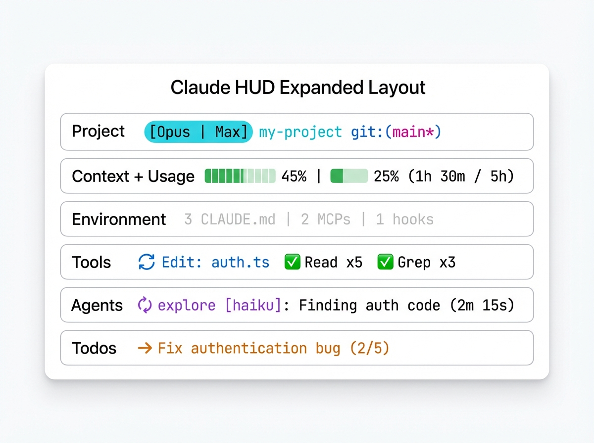

HUD 元素
Claude HUD 在多行中显示有关 Claude Code 会话的实时信息。每个元素提供一项特定数据——从上下文窗口健康状况到工具活动和待办事项进度。本页说明你在 HUD 中看到的每一个指示器、进度条和行。
前提条件：你需要已安装并运行 Claude HUD。请参阅快速开始获取设置说明。

布局模式
Claude HUD 支持两种布局模式，决定元素的排列方式：
展开布局（默认）
在展开布局中，每个元素类别占据独立的一行。顺序由 elementOrder 配置控制：
[Opus | Max] │ my-project git:(main*)
Context █████░░░░░ 45% │ Usage ██░░░░░░░░ 25% (1h 30m / 5h)
3 CLAUDE.md | 2 MCPs | 1 hooks
◐ Edit: auth.ts | ✓ Read ×3 | ✓ Grep ×2
◐ explore [haiku]: Finding auth code (2m 15s)
▸ Fix authentication bug (2/5)
七个元素类别为：project、context、usage、environment、tools、agents 和 todos。当 context 和 usage 在 elementOrder 中相邻时，它们会合并到同一行，以 │ 分隔。
紧凑布局
在紧凑布局中，所有会话信息折叠为一行，活动行（工具、Agent、待办事项）显示在下方：
[Opus | Max] █████░░░░░ 45% | my-project git:(main*) | 3 CLAUDE.md | ██░░░░░░░░ 25% (1h 30m / 5h) | ⏱️ 5m
◐ Edit: auth.ts | ✓ Read ×3
使用以下配置切换布局：
{ "lineLayout": "expanded" }
{ "lineLayout": "compact" }
项目行
项目行显示你的模型、工作目录和 git 状态。在两种布局中都显示为第一行。
模型标识
显示当前活动的模型名称和计费来源：
[Opus | Max] ← 模型名称 + 订阅计划（Pro/Max/Team）
[Opus | API] ← 模型名称 + API 密钥计费
[Opus | Bedrock] ← 模型名称 + AWS Bedrock 提供商
[Opus] ← 仅模型名称（未检测到计划）
模型名称来自 Claude Code 的标准输入 JSON 数据。计费标签的确定规则为：
- 提供商标签（如
Bedrock）——如果可用则优先显示 - 计划名称（如
Max、Pro）——来自使用量 API - API 标识——当设置了
ANTHROPIC_API_KEY时显示为红色API
通过 display.showModel 开关控制（默认：true）。
项目路径
显示当前工作目录，截断为可配置的路径层级数：
my-project ← pathLevels: 1（默认）
apps/my-project ← pathLevels: 2
dev/apps/my-project ← pathLevels: 3
配置方式：
{ "pathLevels": 2 }
通过 display.showProject 开关控制（默认：true）。
Git 状态
显示当前分支和可选的变更指示器：
git:(main) ← 干净分支
git:(main*) ← 存在未提交的更改（脏状态）
git:(main ↑2 ↓1) ← 领先/落后远程
git:(main* !3 +1 ✘2 ?4)← 完整文件统计
文件统计符号：
| 符号 | 含义 |
|---|---|
* |
存在未提交的更改 |
↑N |
领先远程 N 个提交 |
↓N |
落后远程 N 个提交 |
!N |
N 个已修改文件 |
+N |
N 个已添加/暂存文件 |
✘N |
N 个已删除文件 |
?N |
N 个未跟踪文件 |
配置 git 显示：
{
"gitStatus": {
"enabled": true,
"showDirty": true,
"showAheadBehind": true,
"showFileStats": true
}
}
会话名称
启用后，显示会话标识符或通过 /rename 设置的自定义标题：
[Opus | Max] │ my-project git:(main) │ fix-auth-flow
通过 display.showSessionName 开关控制（默认：false）。
上下文行
上下文行显示上下文窗口的使用情况。这是最重要的指示器之一——当上下文填满时，Claude Code 会触发自动压缩以清除对话历史。
上下文进度条
一个 10 字符的可视化进度条，随上下文使用量的增加从左到右填充：
Context █████░░░░░ 45% ← 绿色：健康
Context ███████░░░ 70% ← 黄色：警告
Context █████████░ 90% ← 红色：危急
颜色阈值：
| 百分比 | 颜色 | 含义 |
|---|---|---|
| 0-69% | 绿色 | 健康——空间充裕 |
| 70-84% | 黄色 | 警告——建议尽快完成复杂任务 |
| 85-100% | 红色 | 危急——自动压缩可能即将触发 |
通过 display.showContextBar 开关控制（默认：true）。
上下文数值显示
进度条旁边的数值可以显示三种格式：
Context █████░░░░░ 45% ← percent（默认）
Context █████░░░░░ 45k/200k ← tokens
Context █████░░░░░ 55% ← remaining
配置方式：
{ "display": { "contextValue": "percent" } }
可选值："percent"、"tokens"、"remaining"。
Token 明细
当上下文使用量达到 85% 或更高时，Token 明细会自动显示，展示输入 token 数和缓存使用量：
Context █████████░ 90% (in: 180k, cache: 45k)
这有助于你了解哪些内容占用了上下文空间。Token 计数格式为 k（千）或 M（百万）。
通过 display.showTokenBreakdown 开关控制（默认：true）。
自动压缩缓冲区
默认情况下，Claude HUD 在计算上下文百分比时会考虑自动压缩缓冲区。这意味着显示的百分比反映的是可用上下文而非原始使用量：
enabled（默认）：百分比考虑自动压缩缓冲区，更准确地反映自动压缩何时触发disabled：显示不含缓冲区调整的原始 token 百分比
{ "display": { "autocompactBuffer": "disabled" } }
使用量行
使用量行跟踪 Pro、Max 和 Team 计划的速率限制消耗情况。它显示两个使用量窗口：5 小时和 7 天。
5 小时窗口
在使用量数据可用时始终显示：
Usage ██░░░░░░░░ 25% (1h 30m / 5h)
进度条和百分比显示 5 小时速率限制的消耗量。括号中的时间显示窗口何时重置。
7 天窗口
当 7 天使用量超过 sevenDayThreshold（默认：80%）时显示：
Usage ██░░░░░░░░ 25% (1h 30m / 5h) | ██████████ 85% (2d / 7d)
配置阈值：
{ "display": { "sevenDayThreshold": 50 } }
设置为 0 可始终显示 7 天窗口。
使用量颜色比例
使用量进度条采用与上下文进度条不同的颜色比例：
| 百分比 | 颜色 | 含义 |
|---|---|---|
| 0-74% | 亮蓝色 | 正常使用 |
| 75-89% | 亮品红色 | 接近限制 |
| 90-100% | 红色 | 接近或达到限制 |
使用量阈值
当使用量低于阈值时隐藏使用量显示：
{ "display": { "usageThreshold": 20 } }
设置此项后，使用量行仅在使用量达到 20% 或更高时才显示。
达到限制状态
当任一使用量窗口达到 100% 时，显示变为危急警告：
Usage ⚠ Limit reached (resets 45m)
重置时间告诉你窗口何时重置。
纯文本模式
禁用使用量进度条以显示纯文本标签：
{ "display": { "usageBarEnabled": false } }
效果：
Usage 5h: 25% (1h 30m) | 7d: 85% (2d)
谁可以看到使用量
使用量显示需要 Anthropic 订阅（Pro、Max 或 Team）。以下情况不会显示：
- API 密钥用户（按 token 计费，没有速率限制）
- AWS Bedrock 或自定义 base URL 用户（使用量在其他地方管理）
通过 display.showUsage 开关控制（默认：true）。
环境行
环境行显示活动的 Claude Code 配置来源计数：
3 CLAUDE.md | 2 rules | 4 MCPs | 1 hooks
| 指示器 | 计数内容 |
|---|---|
N CLAUDE.md |
会话中加载的 CLAUDE.md 文件数量 |
N rules |
活动规则文件数量 |
N MCPs |
已连接的 MCP 服务器数量 |
N hooks |
已配置的 hooks 数量 |
仅显示非零计数。当所有计数都为零时，整行隐藏。
环境阈值
控制环境行的显示时机：
{ "display": { "environmentThreshold": 3 } }
仅当总计数（CLAUDE.md + rules + MCPs + hooks）达到阈值时才显示该行。默认为 0（只要有任何计数就显示）。
通过 display.showConfigCounts 开关控制（展开布局默认：false，紧凑布局视情况而定）。
工具行
工具行显示 Claude 工作期间的实时工具调用情况。它同时显示当前正在运行的工具和最近完成的工具摘要。
运行中的工具
活动工具显示旋转指示器以及工具名称和目标：
◐ Edit: auth.ts | ◐ Read: config.json
同时最多显示 2 个运行中的工具。目标路径截断为 20 个字符，路径过长时显示文件名：
◐ Edit: .../deeply-nested-file.ts
已完成的工具
已完成的工具显示对勾和调用次数，按频率排序：
✓ Read ×5 | ✓ Edit ×3 | ✓ Grep ×2 | ✓ Bash ×1
最多显示 4 个已完成工具摘要，优先显示使用频率最高的工具。
组合显示
当同时存在运行中和已完成的工具时：
◐ Edit: auth.ts | ✓ Read ×5 | ✓ Grep ×3 | ✓ Bash ×2
当没有工具被调用时，工具行隐藏。
通过 display.showTools 开关控制（默认：false）。
Agent 行
Agent 行跟踪 Claude Code 在复杂任务中生成的子 Agent。它同时显示运行中和最近完成的 Agent。
运行中的 Agent
活动 Agent 显示旋转指示器、Agent 类型、可选模型、描述和运行时间：
◐ explore [haiku]: Finding authentication code (2m 15s)
| 部分 | 说明 |
|---|---|
◐ |
黄色旋转指示器——Agent 正在运行 |
explore |
Agent 类型（以品红色显示） |
[haiku] |
正在使用的模型（浅色显示，可选） |
Finding authentication... |
任务描述（截断为 40 个字符） |
(2m 15s) |
Agent 启动后的运行时间 |
已完成的 Agent
最近完成的 Agent 显示对勾：
✓ explore [haiku]: Found 3 auth modules (45s)
最多显示 2 个最近完成的 Agent 以及运行中的 Agent，总共最多同时显示 3 个条目。
时间格式
运行时间以人类可读的格式显示：
| 时长 | 显示 |
|---|---|
| 不到 1 秒 | <1s |
| 不到 1 分钟 | Ns（如 45s） |
| 1 分钟或更长 | Nm Ns（如 2m 15s） |
当没有 Agent 处于活动状态时，Agent 行隐藏。
通过 display.showAgents 开关控制（默认：false）。
待办事项行
待办事项行跟踪 Claude Code 使用内部待办列表管理多步骤工作时的任务完成情况。
进行中的待办事项
显示当前活动的待办事项及进度计数：
▸ Fix authentication bug (2/5)
| 部分 | 说明 |
|---|---|
▸ |
黄色指示器——此任务正在进行中 |
Fix authentication... |
待办事项内容（截断为 50 个字符） |
(2/5) |
已完成 / 总待办数 |
全部完成
当所有待办事项都标记为完成时：
✓ All todos complete (5/5)
当没有待办事项或没有正在进行的事项（且并非全部完成）时，待办事项行隐藏。
通过 display.showTodos 开关控制（默认：false）。
附加指示器
会话时长
显示当前会话的运行时长：
⏱️ 5m
通过 display.showDuration 开关控制（默认：false）。
输出速度
显示 token 输出速度（每秒 token 数）：
out: 42.1 tok/s
通过 display.showSpeed 开关控制（默认：false）。
颜色自定义
所有使用颜色编码的元素都可以通过 colors 配置进行自定义：
{
"colors": {
"context": "cyan",
"usage": "cyan",
"warning": "yellow",
"usageWarning": "magenta",
"critical": "red"
}
}
| 颜色键 | 应用对象 | 默认值 |
|---|---|---|
context |
上下文进度条和百分比（正常范围） | green |
usage |
使用量进度条和百分比（正常范围） | brightBlue |
warning |
上下文 70-84%，使用量警告 | yellow |
usageWarning |
使用量 75-89% | brightMagenta |
critical |
上下文 85%+，使用量 90%+，达到限制 | red |
可用颜色名称：red、green、yellow、magenta、cyan、brightBlue、brightMagenta。
元素顺序
在展开布局中，控制哪些元素显示以及显示顺序：
{
"elementOrder": ["project", "tools", "context", "usage", "environment", "agents", "todos"]
}
从数组中省略某个元素会在展开模式中隐藏它。默认顺序为：
project——模型标识、项目路径、git 状态context——上下文窗口进度条和百分比usage——速率限制消耗environment——配置来源计数tools——工具调用活动agents——子 Agent 跟踪todos——待办事项进度
分隔线
在信息元素和活动元素之间添加可视分隔线：
{ "showSeparators": true }
[Opus | Max] │ my-project git:(main)
Context █████░░░░░ 45% │ Usage ██░░░░░░░░ 25%
────────────────────────────────
◐ Edit: auth.ts | ✓ Read ×3
▸ Fix authentication bug (2/5)